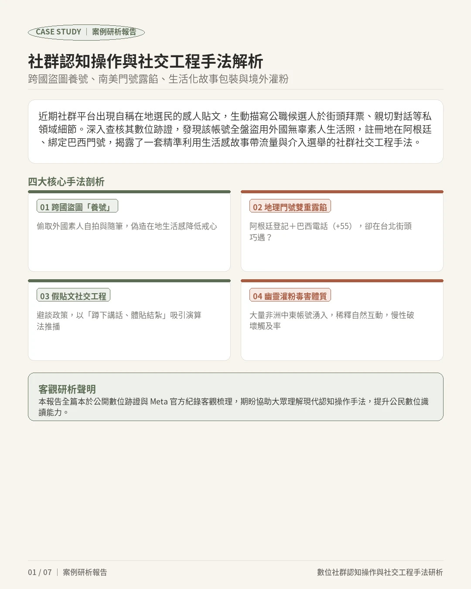
案例研析報告 ｜ 社交工程與假帳號介選手法檢視
境外假帳號社群認知操作與社交工程手法案例解析
近期社群平台 Threads 出現一則自稱在地選民的感人貼文，以第一人稱描寫某直轄市議員候選人於巷口拜票、蹲下親切與幼童互動並提及家庭私領域細節，引發社群演算法推播與轉傳。
然而檢視發文帳號的數位軌跡，卻發現該帳號存在嚴重的身分偽造特徵：其大頭貼與日常生活隨筆，全盤盜用自馬來西亞真實民眾的社群發文；進一步查驗其註冊資料，Meta 官方透明度紀錄顯示其所在地為阿根廷，系統簡訊驗證綁定之行動電話國碼更顯示為巴西（+55）。
本案呈現了現代社群認知操作中典型的「社交工程」與「養號」手法：透過採購境外免洗人頭帳號，竊取真實外國民眾的居家照片營造「真人生活感」以降低防備心，再藉由編造具情緒渲染力的生活化故事吸引演算法流量、置入特定公關宣傳，甚至介入公職選舉。
與此同時，被宣傳之候選人官方社群同期亦出現大量來自非洲、中東等境外幽靈帳號集體追蹤。數位行銷與演算法機制顯示，這類缺乏真實互動的灌粉行為，會直接稀釋抽樣互動率，對社群帳號的長期健康度造成實質傷害。
本報告秉持中立與客觀原則，完整梳理本起案例涉及的跨國帳號足跡、盜圖比對、套版唱和留言與灌粉數據，期盼協助各界了解新型態境外社群操作手法，提升全民對數位訊息的識讀與辨識能力。
Visual Analysis
全套七張客觀分析圖卡速覽
已整理為七張標準社群比例圖卡（1080×1350），完整呈現原始截圖不裁切，供關心公共討論與數位生態的各界朋友自由傳閱下載。


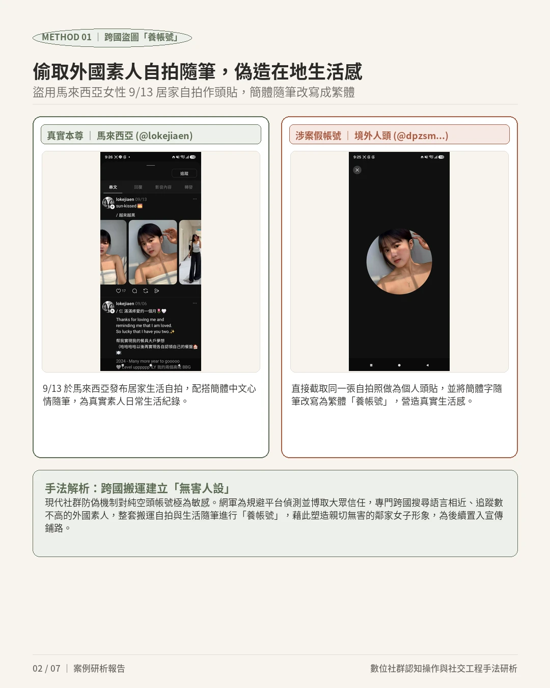


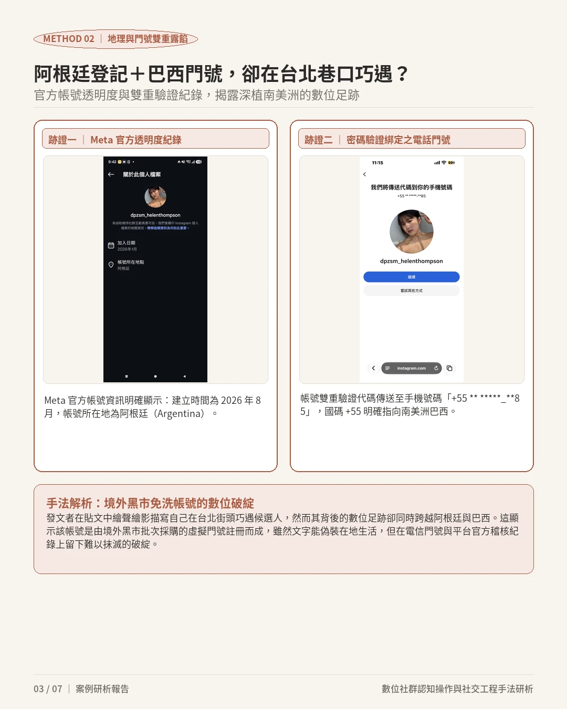


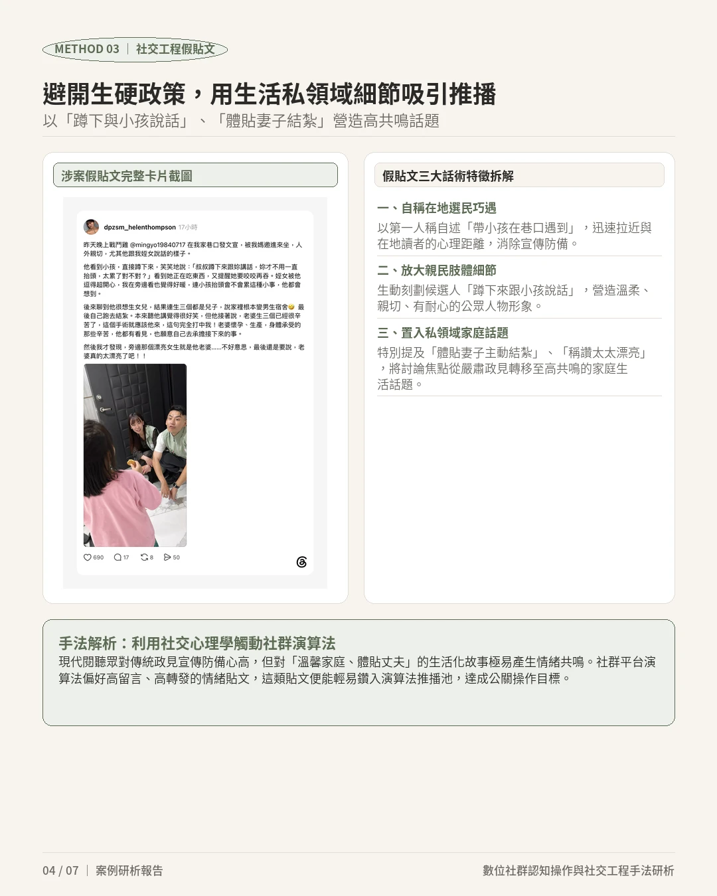


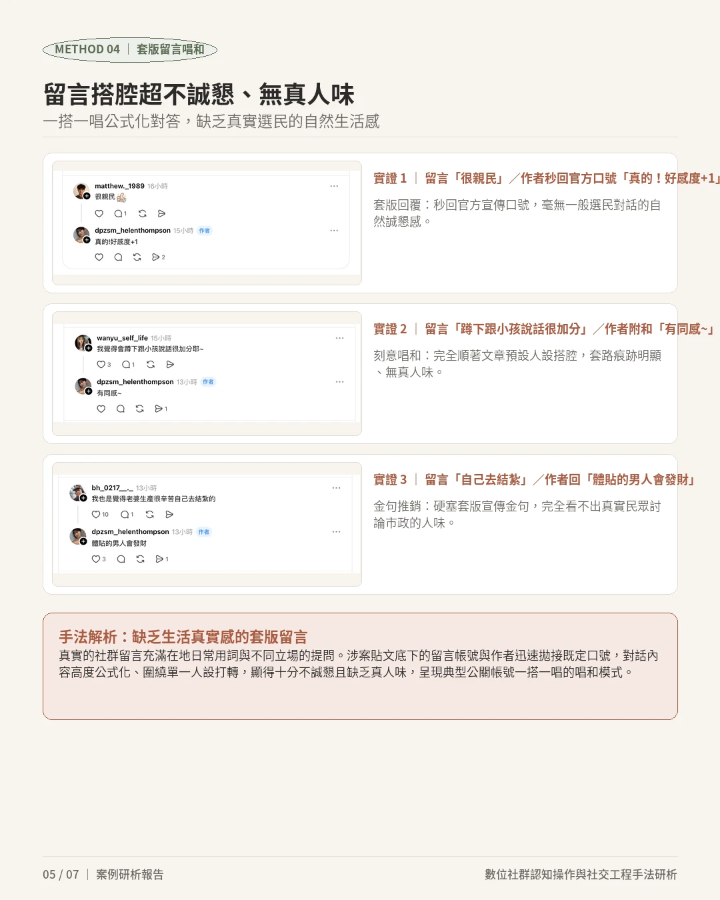


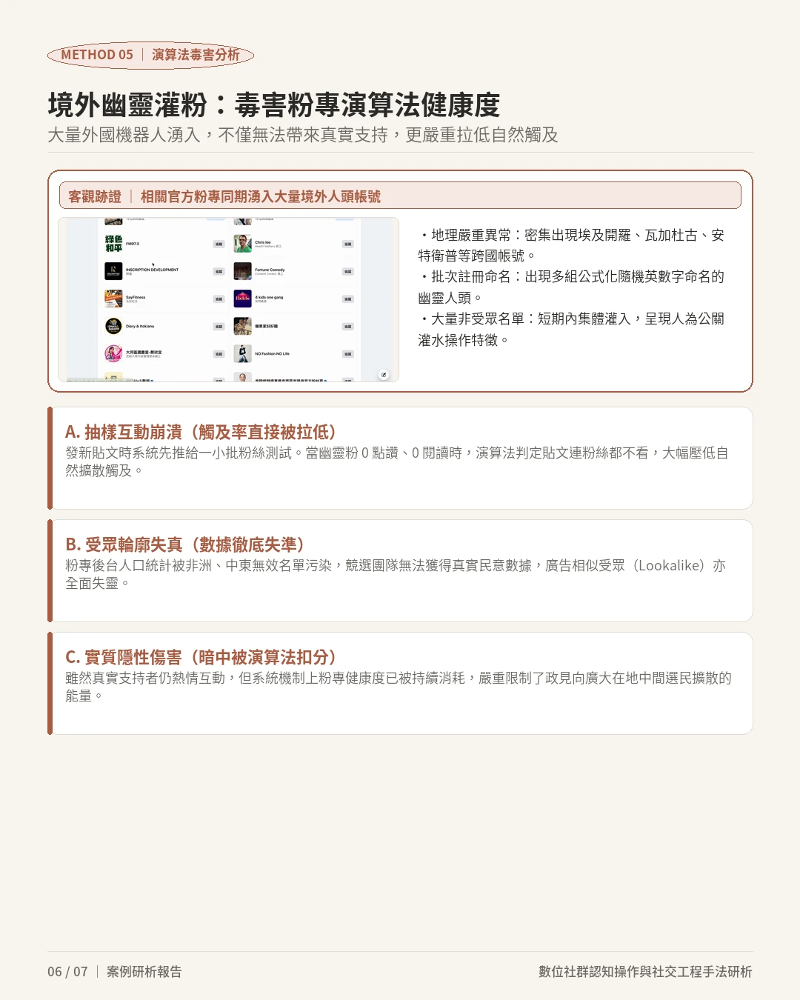


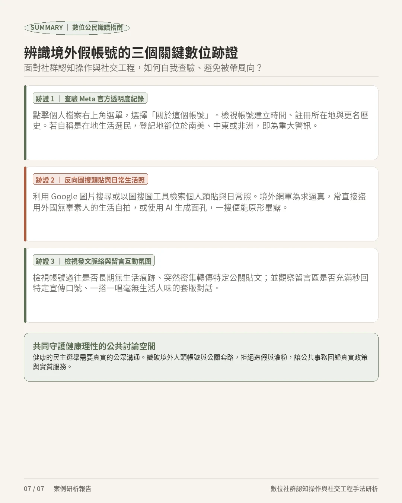


Case 01 ｜ Profile Spoofing
手法解析一：跨國盜圖「養號」——偷取外國素人居家自拍營造真人感
分析境外操作者如何全盤剽竊外國民眾日常自拍與生活隨筆，藉由繁簡轉換與人設包裝，規避社群平台偵測並降低讀者戒心。
實證對照 04
生活照片與大頭照跨海盜用：截取外國素人自拍全套盜用
真實受害者日常自拍
@lokejiaen
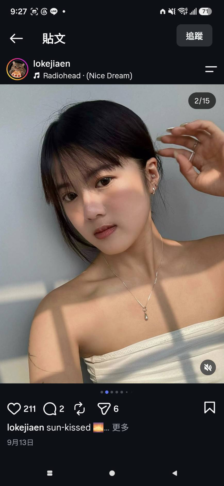
受害者 Instagram 原始發布自拍貼文（2024 年 9 月 13 日）
受害者 Threads 串文配圖：sun-kissed 越來越黑
- 真實身分馬來西亞公民
- 原貼文時間2024 年 9 月 13 日
- 原貼文描述「sun-kissed 越來越黑」
- 存證意義證實原始生活照片來源為馬來西亞素人
涉案假帳號大頭貼
@dpzsm_helenthompson
涉案帳號直接擷取受害者自拍作為個人大頭貼
- 自稱身分台北在地市民 helen
- 大頭貼來源直接截取受害者同張生活自拍
- 涉案註冊時間2026 年 8 月剛註冊即換上
- 畫面特徵二次截圖導致邊緣明顯失真
實證對照 03
日常隨筆與發文習慣抄襲：將馬來西亞簡體碎念改寫成繁體仿冒
受害者日常發文軌跡
@lokejiaen
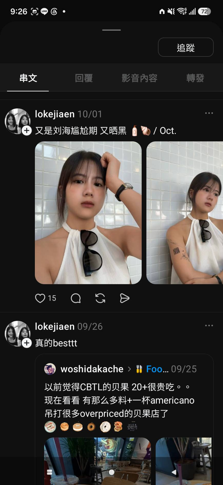
受害者 Threads 原始串文：又是刘海尴尬期又晒黑（10/01）
受害者 Instagram 發文習慣軌跡：Onward / July（7/23）
- 原貼文時間10 月 1 日（Threads）
- 原文內容「又是刘海尴尬期又晒黑」
- 延伸發文習慣常態隨筆如「Onward / July」
- 生活習慣馬來西亞簡體中文日常記錄
涉案帳號仿冒串文
@dpzsm_helenthompson
涉案帳號串文：簡轉繁抄襲，連 Onward 格式也照抄
- 抄襲發布時間10 月 7 日（相隔數天後抄襲）
- 抄襲改寫簡轉繁：「瀏海尷尬期..還曬黑好討厭」
- 亦步亦趨抄襲前篇串文照抄寫「Onward / Sept」
- 操作目的俗稱「養號」，營造常人生活感降低戒心
實證對照 02
Threads 個人主頁數據對照：真實生活交流 vs 幽靈異常推播
真實受害者主頁
@lokejiaen
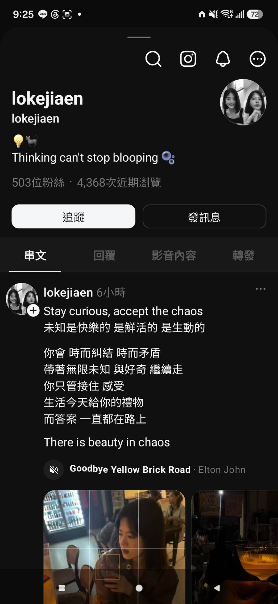
受害者 Threads 主頁：自然互動與正常曝光數據
- 粉絲人數503 位粉絲
- 近期瀏覽量4,368 次瀏覽（真實自然比例）
- 自介內容Thinking can't stop blooping
- 帳號特性常態個人社群，生活痕跡完整
涉案假帳號主頁
@dpzsm_helenthompson
涉案帳號 Threads 主頁：粉絲極少卻有破萬異常曝光
- 粉絲人數僅 28 位粉絲
- 近期瀏覽量高達 18.3K 次（異常灌量曝光）
- 帳號特性剛註冊之幽靈帳號，具人為推播操作痕跡
- 公關風險數據虛假，一眼可被專業社群識破
實證對照 05
Instagram 主頁人設與自介迎合：自介刻意對齊候選人文案
真實受害者個人首頁
@lokejiaen
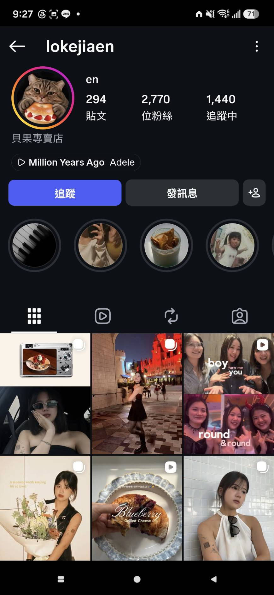
受害者 Instagram 主頁：累積 294 則生活日常
- 帳號累積規模294 則貼文、2,770 位追蹤者
- 註冊年份2013 年 5 月（真實生活老帳號）
- 官方登記地馬來西亞（Malaysia）
- 社群互動真實親友常態互動留言
涉案帳號個人首頁
@dpzsm_helenthompson
涉案帳號 Instagram 主頁：自介寫著「蹲下來看 世界比較有趣」
- 帳號累積規模0 則貼文、0 位追蹤者（空殼號）
- 自介露餡點刻意填寫「蹲下來看 世界比較有趣」
- 呼應宣傳劇本完全對齊候選人「蹲下跟小孩說話」文案
- 官方登記地阿根廷（Argentina）
實證對照 06
Threads 帳號註冊歷史對照：資深早鳥用戶 vs 新生人頭序號
真實受害者帳號狀態
@lokejiaen
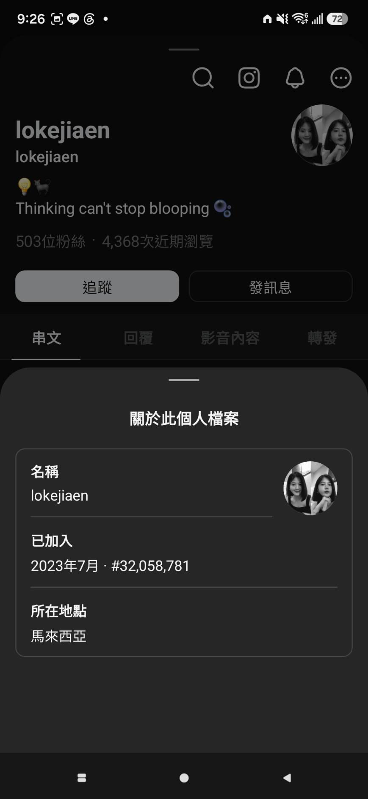
受害者 Threads 詳細狀態：早鳥註冊序號 #32,058,781
- Threads 加入時間2023 年 7 月（平台首波早鳥）
- 用戶序號#32,058,781
- Instagram 連結2013 年 5 月老帳號
- 帳號真實性十餘年完整數位足跡
涉案帳號詳細狀態
@dpzsm_helenthompson
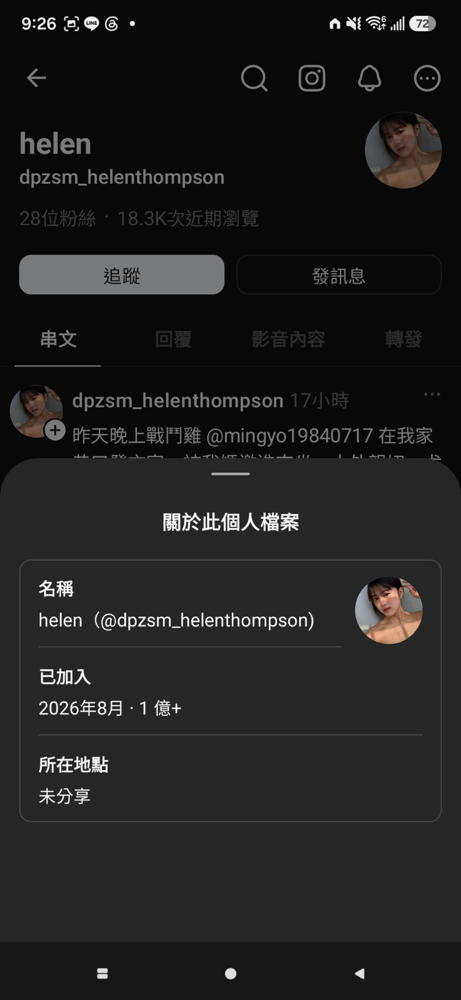
涉案帳號 Threads 詳細狀態：近期新註冊破億序號
- Threads 加入時間2026 年 8 月（近期新創）
- 用戶序號序號破億（典型新生成人頭號）
- 短時間暴增瀏覽18.3K 次（人為操作跡象）
- 帳號真實性零生活軌跡之免洗人頭帳號
技術研析：社群「養號」與真人感偽裝的運作機制
社群平台防偽機制通常會對新註冊、零貼文的帳號進行流量限制。為規避風控，操作者往往會先進行「養號」程序，發布數則無關政治的生活瑣事，甚至直接盜用外國素人的自拍與生活隨筆。這種手法企圖在短時間內製造出「常人生活」的錯覺，使後續發布的政治宣傳或引流貼文能取得較高信任度。然而，發文習慣、用字轉化與圖片來源的破綻，在交叉查驗下依舊清晰可辨。
Case 02 ｜ Geolocation & Verification
手法解析二：地理與門號雙重露餡——阿根廷註冊與巴西國碼電話
Meta 官方透明度紀錄與系統重設簡訊驗證資訊，揭露涉案帳號深層的南美洲境外足跡。
實證對照 07
Meta 官方透明度成對對照：登記馬來西亞 vs 登記阿根廷
本尊官方檔案透明度
@lokejiaen
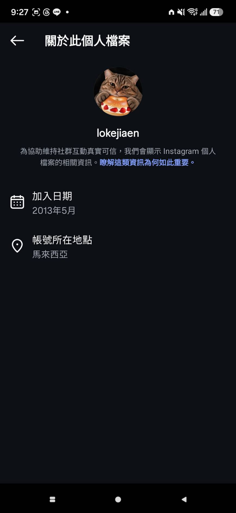
受害者官方透明度：帳號所在地明確顯示為馬來西亞
- 加入日期2013 年 5 月
- 帳號所在地點馬來西亞（Malaysia）
- 資訊來源Meta 官方「關於此個人檔案」
- 身分查證常住於馬來西亞之真實民眾
涉案帳號官方透明度
@dpzsm_helenthompson
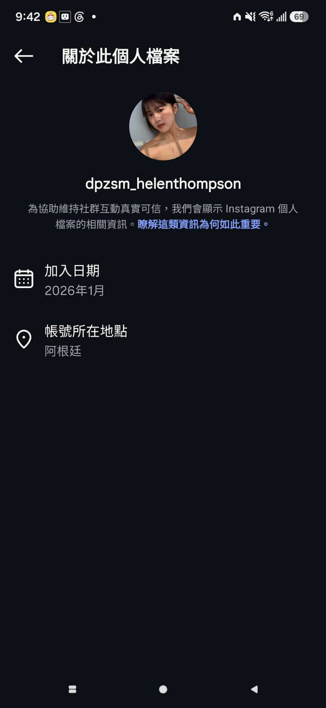
涉案帳號官方透明度：帳號所在地明確顯示為阿根廷
- 加入日期2026 年 1 月
- 帳號所在地點阿根廷（Argentina）
- 資訊來源Meta 官方「關於此個人檔案」
- 與台北距離直線距離一萬九千公里
實證對照 08
系統綁定門號露餡：簡訊驗證碼傳送至巴西國碼（+55）手機號碼
涉案帳號驗證足跡
dpzsm_helenthompson
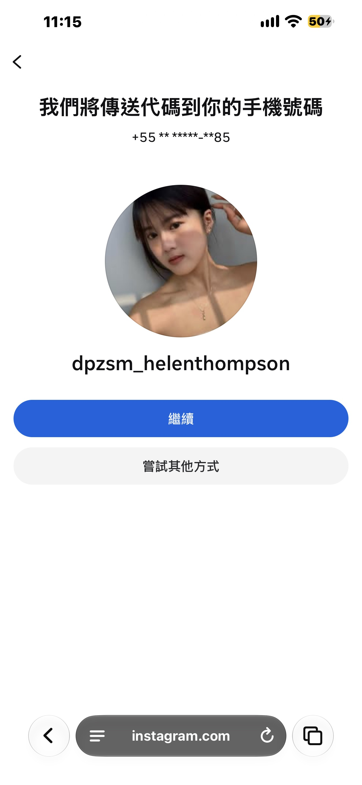
系統驗證畫面：我們將傳送代碼到你的手機號碼 +55 ** *****_**85
- 涉案帳號dpzsm_helenthompson
- 國際電話國碼+55（巴西 Brazil）
- 門號特性南美洲跨國免洗門號
- 關聯分析與阿根廷登記地同屬南美洲境外帳號資源
南美洲門號與境外免洗帳號生態圈
在公關行銷的灰色產業鏈中，南美洲（如阿根廷、巴西）的虛擬門號與預付卡因取得成本低、匿名性高，常被大量採購用於批量生成社群人頭帳號。本案中，涉案帳號在 Instagram 透明度登記為阿根廷，重設密碼時綁定的手機號碼國碼則為巴西（+55）。兩項具體數據皆明確指向南美洲境外資源，卻在社群上假冒在地居民撰寫「巷口偶遇」貼文，在數位鑑識角度下形成不可調和的地理矛盾。
Case 03 ｜ Public Relations Impact
實證三：幫忙還是捧殺？過度刻意的假貼文反而害了候選人
為何這則看似溫馨稱讚的貼文，在選戰專業視角下會被視為一場災難性的公關風險？
01
瓜田李下，留下被反咬的致命把柄
涉案帳號破綻太明顯，稍微懂社群的人點開檔案資訊就能查出「阿根廷」與「盜圖」事證。一旦敵對陣營拿去召開記者會踢爆，候選人立刻會被貼上「買假帳號自導自演、造假在地支持」的標籤，跳進黃河也洗不清。
02
適得其反，抹煞真實基層汗水
基層議員候選人每天實地站路口、跑行程、挨家挨戶握手拜票，本是非常踏實的耕耘。但這種假藉「巷口偶遇」的劇本式發文，只會讓選民產生「原來你們都在演」的負面聯想，嚴重傷害候選人的人設與誠信。
03
留言搭腔過於刻意，中間選民尷尬
貼文下方出現多個帳號留下一模一樣的讚美語調（如「好感度+1」、「體貼的男人會發財」），發文者亦積極搭腔。這種不自然的套路對一般網友來說過於刻意，只會引來困惑與反感。
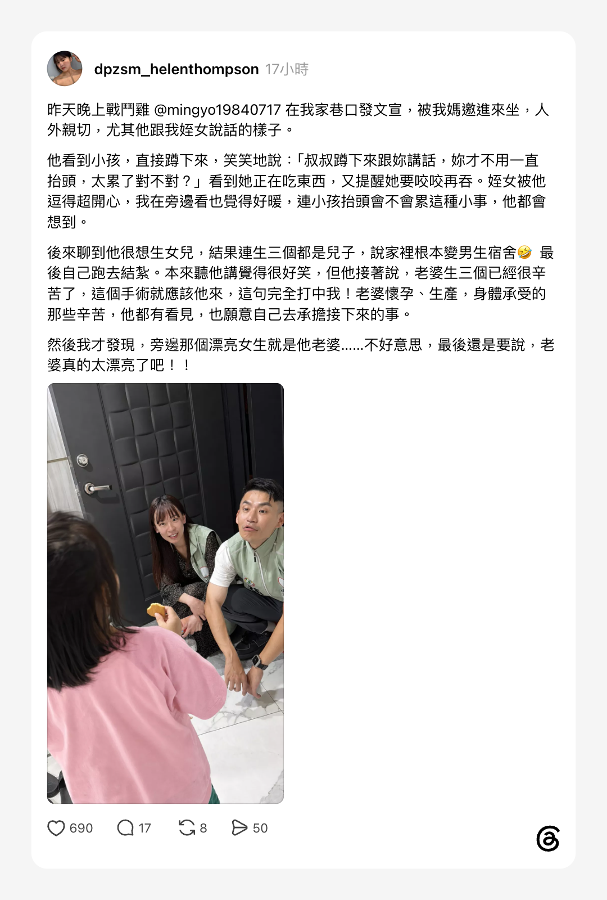
Threads 官方貼文格式卡片
涉案帳號發布之完整卡片存證，包含社群排版與互動數據。
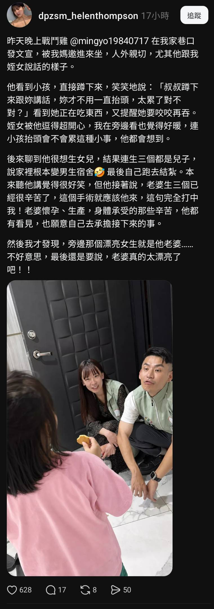
涉案發文長截圖全文
完整長文：巷口偶遇、蹲下對小孩講話、體貼妻子結紮、稱讚配偶外貌。
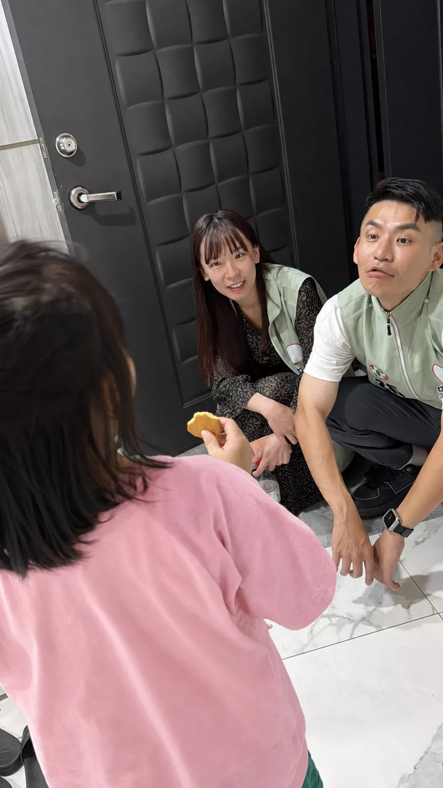
發文搭配之拜票原照
涉案貼文配搭之某公職候選人街頭拜票照片原圖。
Bonus Case ｜ Algorithm Poisoning
同場加映：誰在對粉專灌粉？大量外國幽靈帳號對演算法的實質毒害
候選人官方 Facebook 專頁近期湧入大量境外幽靈帳號追蹤。外行人以為衝粉絲數是好事，但社群行銷都知道：這是在慢性毒害粉專的演算法健康度。
實況 00:05 - 00:30
追蹤者名單中密集出現來自埃及開羅、安哥拉、布吉納法索瓦加杜古、比利時安特衛普等跨國無效帳號，與台北市選民結構毫無關聯。
實況 00:35 - 01:15
出現大量公式化命名的機器人帳號：如 SmartBurrowlive911、BlissfulStarspot693、Jadeloungeoriginal913，為典型批次註冊的名單。
實況 01:20 - 02:00
滑動畫面顯示境外帳號佔比異常龐大，持續擠滿最新追蹤名單，呈現大規模人工灌注的痕跡。
A
抽樣互動崩潰（觸及率直接被拉低）
Facebook 演算法推送機制是：發表新貼文時，系統先推給一小批粉絲進行互動測試。當這些灌進來的人造幽靈粉完全不點讚、不閱讀、不留言時，系統演算法便會判定這則貼文「連現有粉絲都不想看、品質低劣」，進而直接壓低其後續的自然擴散觸及率。
B
受眾輪廓失真（數據徹底失準）
粉絲專頁後台的人口統計數據被非洲、中東、南美洲等無效帳號嚴重污染。這導致競選團隊在檢視受眾分析、評估選民政見回饋時根本無法獲得真實資訊，廣告演算法的相似受眾（Lookalike）亦會全面失靈。
C
實質隱性傷害（暗中被扣分）
雖然該粉專貼文平日的互動數據依然維持良好，主要是真實支持者熱情互動；但就系統機制而言，粉專的整體演算法健康度已被幽靈假粉持續稀釋，限制了貼文向更廣大在地選民自然擴散的機會。
Public Archive
相關涉案帳號與官方檔案連結匯總
所有資料皆於 2026 年 10 月完成本地影像備份與存證，以下列出原始公開連結供對照驗證。
| 身分角色 | 帳號名稱 | 平台 | 官方登記地點 | 原始檔案連結 |
|---|---|---|---|---|
| 涉案發文假帳 | helen (@dpzsm_helenthompson) | Threads | 未公開 | 查看 Threads 檔案 |
| 涉案發文假帳 | helen (@dpzsm_helenthompson) | 阿根廷（Argentina） | 查看 IG 檔案 | |
| 跨國受害本尊 | lokejiaen (@lokejiaen) | Threads | 馬來西亞 | 查看 Threads 檔案 |
| 跨國受害本尊 | lokejiaen (@lokejiaen) | 馬來西亞 | 查看 IG 檔案 | |
| 相關提及之候選人帳號 | 某公職候選人 (@mingyo19840717) | Threads | 台灣 | 查看公開檔案 |
| 相關提及之粉絲專頁 | 某公職候選人 粉絲專頁（追蹤名單） | 台灣 | 查看公開專頁（追蹤名單） |
留言搭腔超不誠懇、無真人味
貼文下方的留言與回覆充滿套版套路，一搭一唱毫無真人生活味，顯得十分不誠懇：
秒回官方宣傳口號「好感度+1」，毫無一般民眾互動的自然誠懇感。
完全順著文章預設人設搭腔，套路痕跡明顯、無真人味。
針對非政見的家室外貌細節一搭一唱，十分不誠懇。
硬塞「體貼的男人會發財」套版金句，完全看不出真實選民對話的人味。
多個帳號重複誇讚同一話題，唱和過於刻意，缺乏真誠溝通。